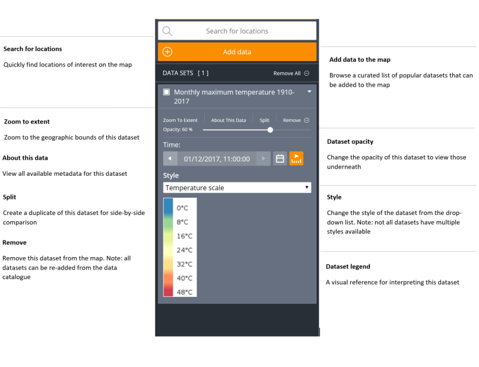

Help & FAQ
To launch the Investor Map and display some basic data follow these steps.
- Display the Investor Map by using the URL http://nationalmap.gov.au/investormap.
- In the left hand panel click the Add Data button to launch the Data Catalogue.
- Browse through the Data Catalogue to find a data set of interest. Click on the title of your prefered data set to get a preview of that data, along with a description and other relevant metadata. To view your selected data set on a larger map, click the Add to the Map button. The spatial data will be immediately displayed in the map view, and a visual legend for that data will appear in the Data Workbench, located on the left hand side of the page.
- Note that it may not be immediately obvious where your selected spatial data has loaded on the map if does not cover a large part of Australia. To locate loaded data on the map, go to the Data Workbench (positioned on the left hand side of the page), and click the Zoom to extent link for your desired data set. From here you can also click About this data to get more information about your selected data set.
- To add additional data sets to the map, simply click Add Data again in the left hand panel to relaunch the Data Catalogue. You can add multiple data sets without returning to the workbench, by holding Shift key and the (+) button for each data set to be added.
- One way you can improve the data visualisation is by using the opacity slider in the same section as About this data.
- Zoom manually by moving your mouse pointer over the map and using your mouse wheel to zoom in or out further.
- To check how long datasets take to load (especially for very large ones), check the orange progress bar at the very top of the map.
- Click and drag the map to further show the region in which you are interested.
- Click on a feature (that is, directly on a point or line, or within a region) to show data about the individual feature.
You can perform these steps in any order as required to tune your display of spatial data.
Below is a view of different options and steps described.

Click on the feature which is displayed on the map. You can click on Points, on Lines or within Regions to see a display of the information available from the spatial data provider for that particular feature.
For Points and Lines, you need to click quite accurately to identify the feature. For Regions, clicking on the boundary will give ambiguous results. Click within the region.
You cannot find out further information about the features which are part of the base maps.
Investor Map can display two kinds of spreadsheets:
- Spreadsheets with a point location (latitude and longitude) for each row, expressed as two columns: lat and lon. These will be displayed as points (circles).
- Spreadsheets where each row refers to a region such as a local government area (council), state, postcode, or ABS statistical unit such as an SA2 or CED (Commonwealth Electoral Division). Columns must be named according to the CSV-geo-au standard. These will be displayed as regions, highlighting the actual shape of each area.
Spreadsheets must be saved as CSV (comma-separated values).
Other standard spatial data types such as GeoJSON and KML are also supported.
There are two ways to load your data:
- Drag your data file onto the Investor Map view. The format of the data file will be auto-detected.
- Click on the Add Data button in the left hand panel. This will launch the Data Catalogue. Select the My Data tab at the top of the modal window and follow the provided instructions.
As for the Investor Map data sets already available in the catalogue, you can click on the regions or points to see the data available for that location. If the file is a CSV file, the data from all columns will be shown in the feature information dialogue when you click.
You can also use all of the features of the Data Workbench on the data you have loaded as well.
To share a view of your data with others, you must host your data and create a web address (URL) using your provider of choice and then load the URL onto the application, via Add data My Data section of the catalogue. The data will not remain available in the catalogue, once the application is closed.
There are two types of download:
- Raw data: Once a dataset has been selected, click the "About this data" button, then scroll down to the Data URL and click on the link. Data download depends entirely on custodians making it available. Should the raw files not be available, users need to contact custodians directly; their details are available under Data Custodian or Service Contact, on the same page.
- Feature Information: Once a point or a polygon on the map is selected and the Feature Information window is shown, you can download the data in that particular feature info window, by scrolling down and clicking on Download this Table, in CSV or JSON. It will just download the feature info table, not the actual, raw data.
There are three ways:
- Click the Share button, copy the given URL (shown in the first text box) to the clipboard and paste it into an email which you send to the recipient. They can click on it in the email or paste it into their browser to see the same view as you.
- Click the Share button, copy the HTML fragment (shown in the second text box) and paste it into an HTML file, which you then make available to the recipients. When the recipients display your web page, they will see the Investor Map view within that web page.
- Click the Share button and simply use the Print Preview and Print.
- Take a screenshot and email it as an image (see your OS instructions on how to take a screenshot). This will share all information, even if loaded from a local file or URL.
Note that only the third and fourth methods will show the data you have loaded from a local file.
Most Terria maps now include Satellite Imagery in their catalogues. The new Splitter functionality helps users navigate those datasets following these steps:
- Select an area/location
- Select a data set from the Satellite Imagery catalogue group and add it to the workbench
- Note that timeframes (for the imagery) do overlap; it means that sometimes, different satellites collected imagery during the same timeframe; the quality of the imagery might be different
- Click on the Split functionality in your workbench; it will create a copy of the data already selected. Note that you can use the splitter with two different datasets, not just with copies of the same data
- Select different times (using the date picker) for the “left” and “right” sections of the screen; Use the back and forward arrows to explore imagery and select cloud-free views
- Drag the splitter on the screen to observe the differences
- You can turn off the splitter by clicking on the “Split” icon in the right-hand side toolbar / menu.
Charting is a functionality in TerriaJS which allows users to compare values in time series datasets, using a graph. According to the ABS, time series data is a collection of observations of well-defined data items obtained through repeated measurements over time. To activate the chart functionality:
- Select a time series datasets from the catalogue (Social & Economic data group is a good example);
- Click on a point or region of interest to activate the feature information panel; for time series data, the panel will include a graph;
- Click on Expand blue button to see the graph enlarged at the bottom section of the screen;
- Click on other points or areas on the map and follow the same process to compare the two (or more) lines on the same chart.